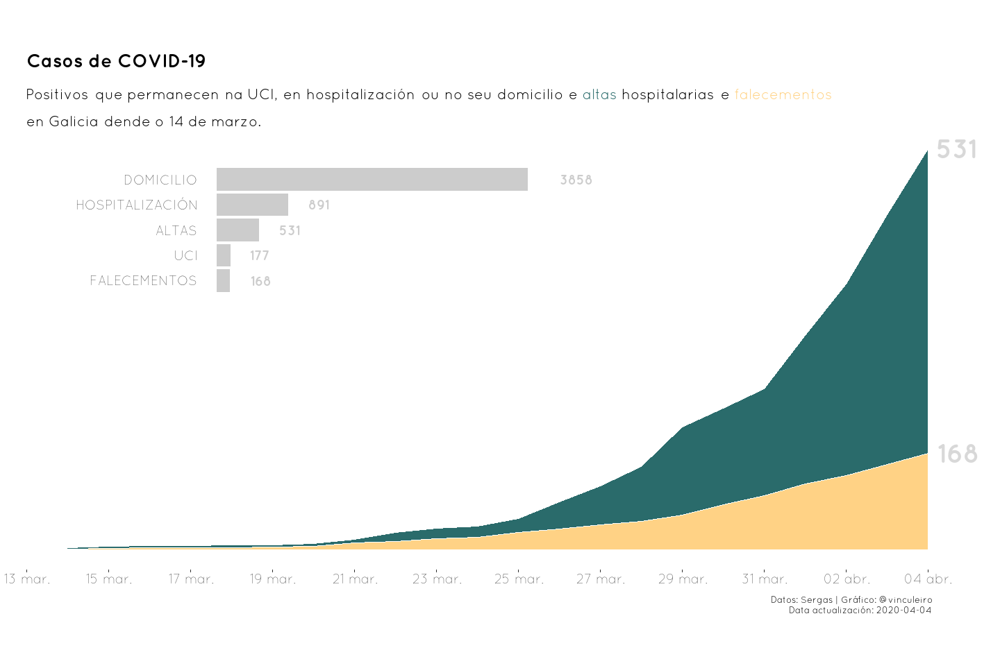
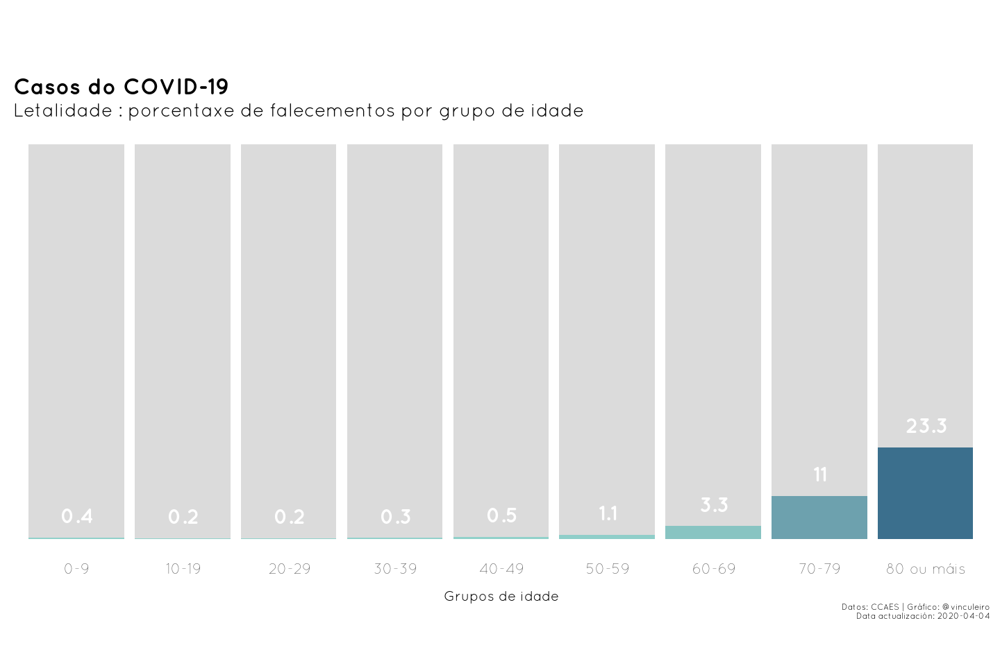

COVID-19: Información útil

Atopámonos de cheo nunha pandemia, propagación mundial dunha nova enfermidade. Vemos peligrar a nosa integridade física e isto prodúcenos inquedanza, así que cómpre contar cunha sociedade que nos aporte estabilidade e calma mentres a situación non se agrava. Leo e vexo todos os días noticias e tertulias que fan xusto o contrario do que necesitamos, desinforman. Buscan a noticia máis sensacionalista, o dato máis negativo, aquela persoa que poida acrecentar o estado de histeria colectiva na que deben estar a meirande parte das persoas que usan, como fonte de información principal, a televisión.
Por todo isto, decídome a aportar unha canle transparente de información diaria sobre a situación da propagación do COVID-19. A información desta publicación irase actualizando conforme vaian saíndo novos datos e as análises pode que se vaian ampliando segundo a miña imaxinación e intelixencia me permitan.
Comecemos!
CONTEXTO
O día 11 de marzo, a OMS (Organización Mundial da Saúde) en palabras do seu director xeral, Tedros Adhanom Ghebreyesus, estima que o Covid-19 pode ser caracterizado como unha pandemia.
O primeiro caso, apareceu en China na capital da provincia de Hubei, en Wuhan e de aí extendeuse ao resto do planeta. A evolución da pandemia xa a coñecedes, grazas á sobreinformación aparecida nos medios durante este més.
Se queredes coñecer unha opinión versada da situación e sen intención sensacionalista, recoméndovos esta entrevista a Luis Enjuances, virólogo e director do laboratorio do CNB-CSIC (Centro Nacional de Biotecnoloxía do Consello Superior de Investigacións Científicas):
Nesta publicación expoñerei análises a 3 niveis:
É importante destacar que se fala moito do número de casos confirmados acumulados e novos, mais non se trata a importancia de analizar o factor de crecemento dos casos, é dicir, a evolución da diferenza entre o valor de casos novos dun día e do día anterior. Este factor permítenos saber en que punto estamos, se imos aumentando expoñencialmente os casos día a día ou se este incremento xa está a reducir. Se o factor de crecemento é maior de 1 isto diranos que se produciu un incremento de novos casos maior que o día anterior, se é menor ou igual, diranos que o incremento se mantivo ou se reduciu. Isto é relevante xa que no momento no que o factor de crecemento baixe de 1 estaremos nun escenario de estabilización dos casos novos o que axudará a reducir a carga sanitaria a cal, no fondo, é que verdadeiramente preocupa (neste vídeo podedes ver a explicación ampliada).
GALICIA
A nosa comunidade, ben sexa pola súa situación xeográfica, pola menor mobilidade de xente que presenta ou polas medidas tomadas, non é das máis afectadas. Para mostra o seguinte gráfico, onde se ve que se vai producindo un aumento, pero este, á vista do factor de crecemento, tende a estabilizarse non a incrementarse, achegándose a valores próximos a 1.
Agora falarei de varios temas: a evolución xeográfica da propagación, a situación hospitalaria e máis a comparativa co principal foco de persoas afectadas en España, a Comunidade de Madrid.
Novos casos por área sanitaria
No mapa de abaixo pódense ver o número de casos novos que hai por área sanitaria (en Galicia hai 7) e máis o total dende que comezou a contabilización de casos confirmados.
Altas e falecementos
Quizais sexan os valores máis demandados, saber cantas altas e cantos falecementos está a producir o coronavirus en Galicia. Pois ben, polo de agora, as altas superan aos falecementos. Tamén é interesante comentar que a meirande parte da xente que deu positivo no test de coranavirus están no seu domicilio.

ESPAÑA
Cómpre situar tamén o resto de CCAA con respecto a Madrid, a letalidade do virus nos diferentes grupos de idade, como se distribúen os contaxios entre estes e cal é a información sobre altas e falecementos.
Comparación das CCAA (agás Galicia) coa Comunidade de Madrid
Saltando ao resto da Península, a modo de curisodidade fixen o mesmo gráfico comparativo de Galicia e Madrid máis esta vez entre Madrid e o resto de CCAA agás Galicia.
Letalidade por grupos de idade
Como xa se vén apuntando nos artigos publicados o COVID-19 afecta, sobre todo á poboación de maior idade, como tamén se pode ver no seguinte gráfico.

Casos confirmados por grupos de idade e sexo
Algo que se comenta na bibliografía científica é a diferenza entre sexos. Este tema non está claro. No gráfico vemos a cantidade de casos confirmados por grupos de idade en homes e en mulleres .
Altas e falecementos
Sirva de ordenamento a seguinte gráfica, para saber onde se están a producir a maior porcentaxe de altas e falecementos nas 17 CCAA. Este valor está calculado partindo dos datos de altas e falecementos cada 100.000 habitantes para poder usar unha escala similar en todas as CCAA.
RESTO DO MUNDO
Facendo uso dos datos do CSSE (Center for Systems Science and Engineering) da Johns Hopkins University fixen a seguinte gráfica na que escollín 5 países europeos: España , Italia , Alemaña , Francia e Portugal .
Comparación entre España, Italia, Alemaña, Francia e Portugal
PREDICIÓNS e OUTROS
Esta parte é a que máis soe interesar, mais non me atrevín a predicir porque os meus coñecementos en modelización epidemiolóxica son limitados. Pero o que si fixen foi compilar unha serie de páxinas onde podedes consultar 2 modelos e un simulador:
- [Laboratorio de Óptica] (http://physics.uvigo.es/covid19/) da Universidade de Vigo.
- [Calculadora epidémica] (http://gabgoh.github.io/COVID/index.html) de Gabriel Goh. Esta non é unha predición senón unha aplicación interactiva para poder simular os diferentes escenarios da pandemia.
- Mapa de riscos de contaxio.
Referencias e fontes de información
A Sala de comunicacións do SERGAS (Servizo Galego de Saúde).
Os informes do CCAES (Centro de Coordinación de Alertas e Emerxencias Sanitarias).
Os datos do CSSE (Center for Systems Science and Engineering) da Johns Hopkins University.
O martelo e a danza de Tomás Pueyo.